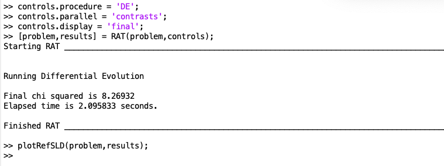
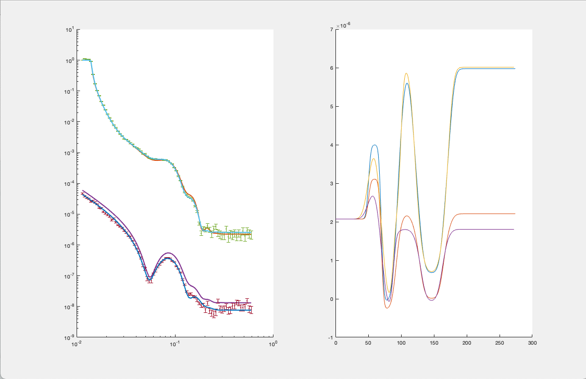
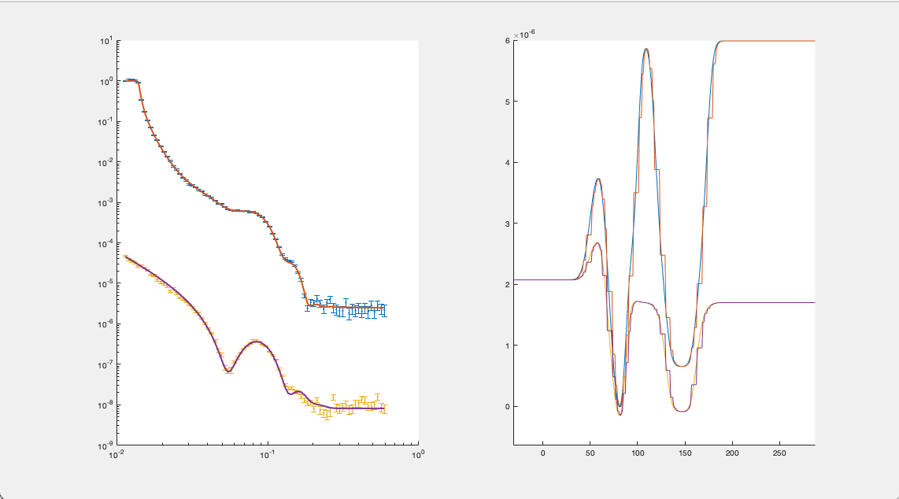

Basic Plotting¶
The simplest plot available is a simple display of the contents of the problem and results blocks. This takes the following form:
figure(1); clf
plotRefSLD(problem,results)
This produces a basic plot of the reflectivity and SLD.
If this plot is not cleared before subsequent plots, then plotRefSLD will overplot allowing the results of calculations to be compared:
 If you don’t wish to overplot, just clear the figure before re-running plotRefSLD.
If you are resampling your SLD’s, the plotRefSLD will automatically show the resampled layers for you:
